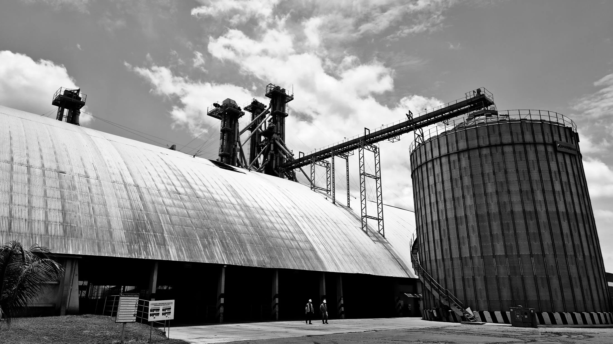
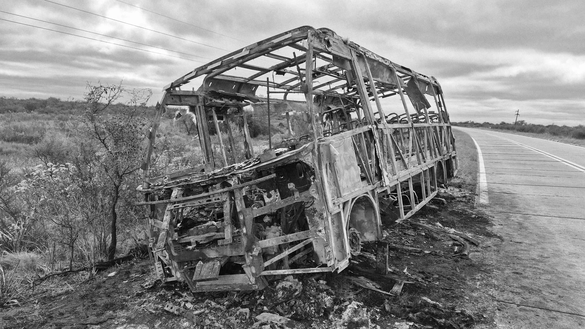
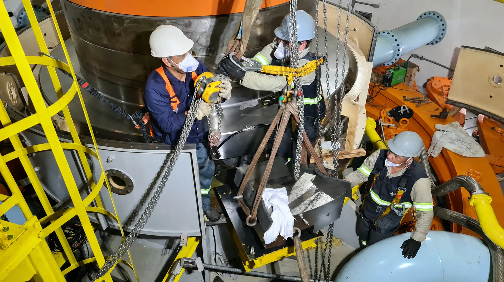

01
Uma máquina falhou e existe divergência sobre a causa.
Análise de falhas e sinistros, assistência técnica judicial e arbitral, análise documental, inspeções e pareceres para situações em que entender o dano e a responsabilidade definem o próximo passo.
Uma máquina falhou e existe divergência sobre a causa.
Um sinistro exige apuração precisa e fundamentada.
Fabricante, fornecedor e cliente discordam sobre o ocorrido.
Um processo depende de uma leitura que o jurídico não tem.
Um laudo precisa ser tecnicamente avaliado ou contestado.
Há prazo correndo e diferentes especialistas precisam da mesma leitura.
A PSG investiga a causa, estrutura a evidência e organiza a fundamentação. Engenharia interna, jurídico, peritos e demais envolvidos passam a ler o mesmo problema da mesma forma.
Da ocorrência em campo à manifestação técnica que sustenta o processo.
Análise dos autos, quesitos, acompanhamento da perícia e manifestações técnicas.
Investigação de causas e modos de falha em máquinas, materiais e processos.
Fundamentação técnica para decisões críticas.
Apuração da causa, extensão dos danos e elementos técnicos da ocorrência.
Suporte em conflitos envolvendo contratos e responsabilidades.
Valoração de máquinas, equipamentos e instalações industriais ou civis.
Viabilidade técnica e econômica de reparos por meio da análise de pertinência de itens e serviços.
A análise é conduzida no local da ocorrência, sobre o equipamento real e com a documentação do caso — não a partir de suposição.

Ambiente industrial / campo
Sinistro / causa
Equipamento / evidênciaA análise que sustenta uma decisão precisa ser feita onde o problema está. A PSG atua sem limitação geográfica, indo a campo onde a análise técnica for necessária.
A PSG faz a ponte entre o que a engenharia prova e o que a decisão exige.
Apresente o caso para a PSG. Entendemos o contexto e indicamos o próximo passo técnico.
Falar com a PSG ↗